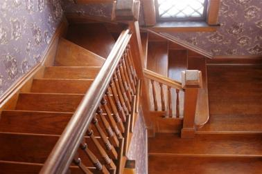
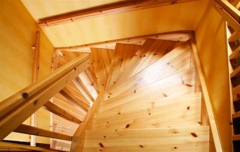

London Stairs
 
London Stairs is a business dedicated to supplying purpose made stairs, on an express basis, to developers, builders, specialist contractors and self-builders throughout London and the South East of England.
Making extensive use of CAD and CNC technology, London Stairs can design, manufacture and deliver softwood and hardwood stairs together with associated newels and spindles with manufacturing periods as short as 7 days from order.